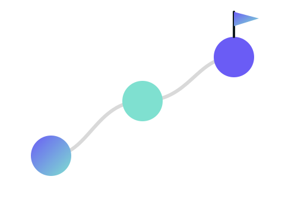

AI HANDOUT STUDIO
資料づくりを、 翌日提出できる速さに
自分の資料を、自分の手で速く仕上げる
01
作る流れ
2
かかる時間
30分で骨子、3回で仕上げ
30分
骨子づくり
テンプレートから
3回
画面での手直し
1枚あたり
4形式
書き出し
PDF / PNG / HTML / PPTX
手を動かすのは、画面で直す3回ぶんだけ。
3
分担
AIと自分で、持ち場を分ける
AIがやること
目的と読者から骨子を書く 文章の量をそろえる 数字は依頼にあるものだけ使う
自分がやること
配置と文言を画面で直す 見た目のテンプレートを選ぶ 渡す形を決めて書き出す
4
4つの段
下書きから、渡せる形まで
4つの段を通ると、そのまま渡せる形になる。
- 1
骨子
目的と読者から下書きする
- 2
仕上げ
画面で配置と文言を直す
- 3
見た目
テンプレートを選び替える
- 4
書き出し
PDFとPPTXで渡す
5
おしまい
まずは1枚、作ってみる
見た目を選んで、骨子から始める
